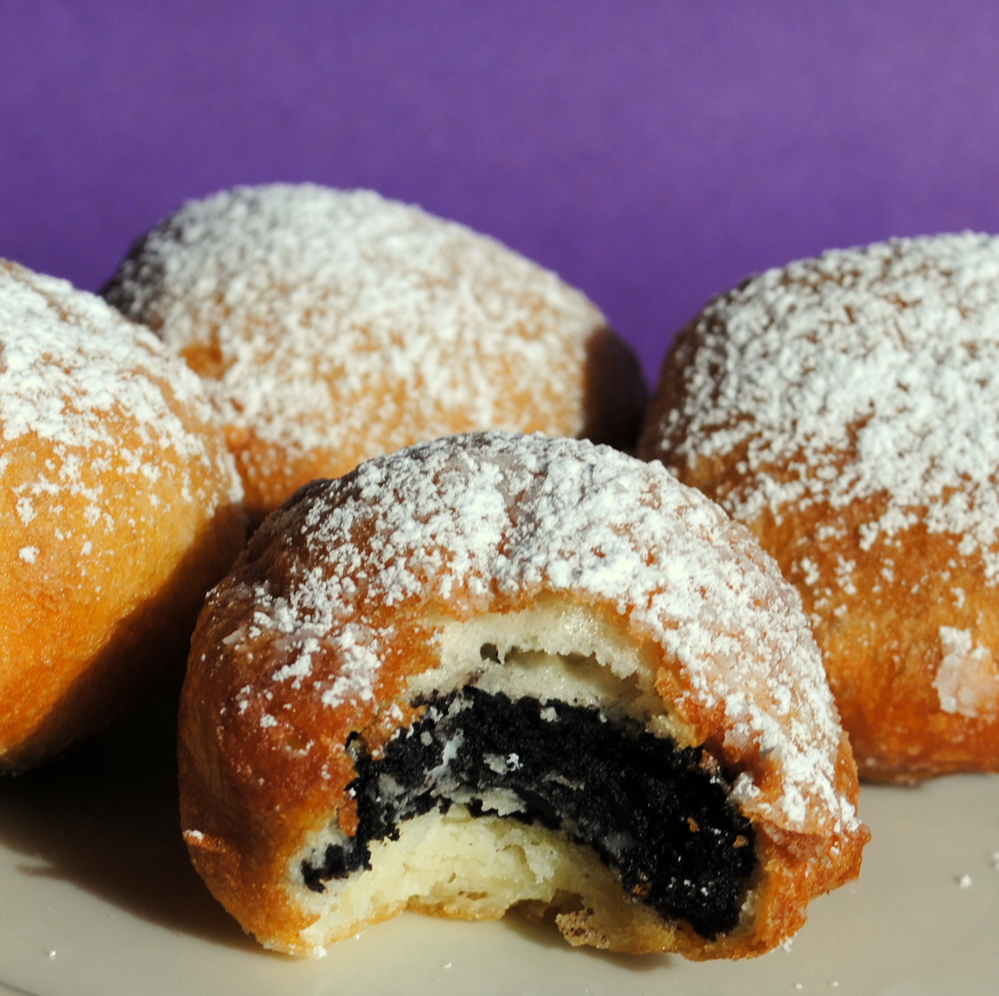

Deep Fried Oreos

Oreos dipped in pancake bater and fried
Ingdredients
- 2 quarts vegetable oil for frying
- 1 large egg
- 1 cup milk
- 2 teaspoons vegetable oil
- 1 cup pancake mix
- 1 370g pack Oreos
Steps
- Heat oil in deep-fryer to 375 degrees F (190 degrees C).
- Whisk together the egg, milk, and 2 teaspoons of vegetable oil in a bowl until smooth. Stir in the
pancake mix until no dry lumps remain.
- Dip the cookies into the batter one at a time, and carefully place into the hot frying oil. Fry only 4
or 5 at a time to avoid overcrowding the deep fryer.
- Cook until the cookies are golden-brown, about 2 minutes. Drain on a paper towel-lined plate before
serving.
Back to recipe list